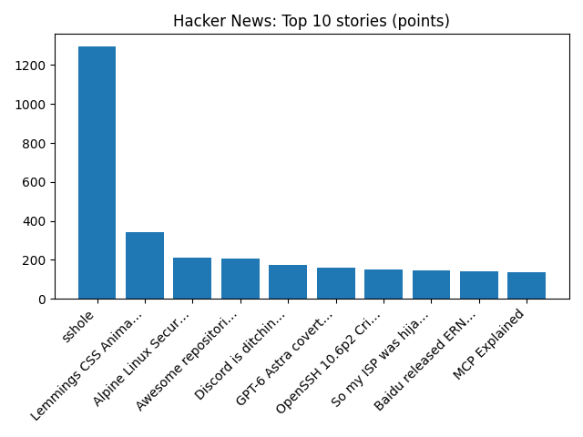

Interest rates hiked to 4% in first increase in over three years
BBC — Business
YOUR DAILY INTELLIGENCE BRIEF · 2026-11-05
Global watch: Interest rates hiked to 4% in first increase in over three years, Paraguay President Santiago Peña resigns.
Northern Virginia: Dramatic Weather Shift In VA Follows 2 Rounds Of Rain: See Forecast - Patch, Shop, Sip, and Celebrate at These 13 Northern Virginia Holiday Markets - Northern Virginia Magazine.

Global coverage includes Interest rates hiked to 4% in first increase in over three years; Paraguay President Santiago Peña resigns; Nasdaq set to confirm correction as AI stocks tumble - Reuters. Local coverage includes Dramatic Weather Shift In VA Follows 2 Rounds Of Rain: See Forecast - Patch; Shop, Sip, and Celebrate at These 13 Northern Virginia Holiday Markets - Northern Virginia Magazine.

Bahnhofstrasse
Bahnhofstrasse (Swiss Standard German pronunciation: [ˈbaːnhoːfˌʃtraːsɛ] , lit. In 2016, the street ranked ninth.
https://en.wikipedia.org/wiki/Bahnhofstrasse
Runs so far today: 2